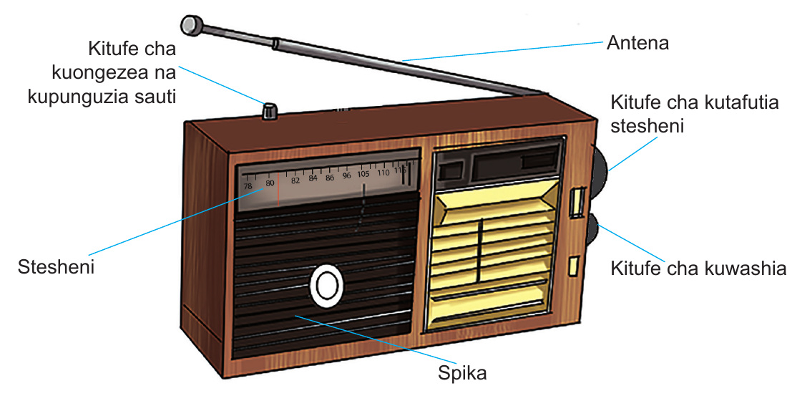

Kitufe cha kuongezea na kupunguzia sautiAntenaKitufe cha kutafutia stesheniStesheniSpikaKitufe cha kuwashia
Kielelezo namba 5: Sehemu za redio
Namna ya kutumia redio
Ili uweze kutumia redio kwa usahihi ni muhimu kufahamu sehemu muhimu za redio. Sehemu hizo ni spika, kitufe cha kuwashia, na kitufe cha kutafutia stesheni. Sehemu nyingine ni sehemu ya kuwekea betri, sehemu ya kuchomeka waya wa umeme na mshikio. Aidha, redio huwa na antena ya kudaka mawimbi ya sumakuumeme.